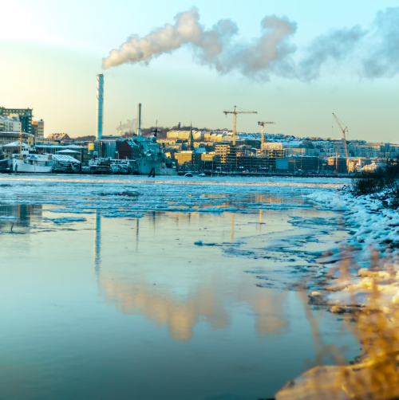
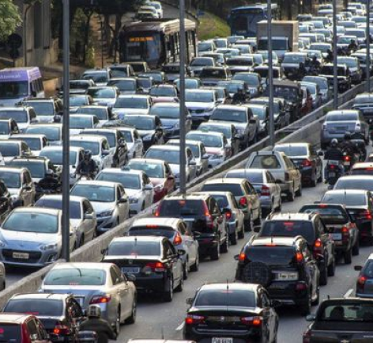
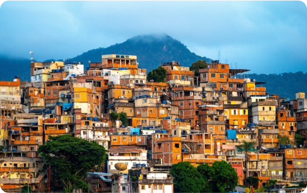

Benefícios e problemas
A urbanização, ou o processo de crescimento e desenvolvimento das cidades, traz consigo uma série de benefícios e problemas. Vamos explorar ambos:
BENEFÍCIOS DA URBANIZAÇÃO
DESENVOLVIMENTO ECONÔMICO
As cidades são centros de atividade econômica, oferecendo uma maior diversidade de empregos e oportunidades de negócios.
A concentração de pessoas e empresas facilita o desenvolvimento de mercados e serviços.
ACESSO A SERVIÇOS
Cidades geralmente oferecem melhores serviços de saúde, educação, transporte, saneamento básico e segurança pública.
A infraestrutura urbana facilita o acesso a serviços essenciais que são escassos em áreas rurais.
PROBLEMAS DA URBANIZAÇÃO
POLUIÇÃO
Este é um problema que assume diversas formas nas cidades, sendo as principais a poluição atmosférica, que é causada pela alta concentração de indústrias e veículos automotores nas regiões urbanas (causando principalmente a piora da qualidade do ar que respiramos) e a poluição das águas, recorrente da comum falta de infraestrutura sanitária nas cidades, pois muitas vezes os resíduos dos esgotos acabam sendo indiscriminadamente jogados nos rios e nas águas urbanas.
A poluição sonora também é recorrente e ocorre quando há em um ambiente muitos ruídos que podem ser nocivos à saúde (sendo que a Organização Mundial da Saúde considera que qualquer som acima de 50 decibéis já se torna prejudicial à saúde). Muito característicos dos centros urbanos, haja vista que o barulho das buzinas dos carros, o comércio extremamente movimentado e outros fatores acaba emitindo muitos ruídos, atrapalhando a comunicação e causando prejuízos à audição, por exemplo;
DESIGUALDADE SOCIAL
As cidades frequentemente apresentam grandes disparidades econômicas e sociais, com áreas de extrema pobreza e favelas contrastando com bairros ricos.
A desigualdade pode levar a problemas de criminalidade e violência.
HABITAÇÃO INADEQUADA
A demanda por habitação nas cidades pode superar a oferta, resultando em moradias inadequadas e favelas.
A falta de planejamento urbano adequado pode levar à construção desordenada e à ocupação de áreas de risco.
PRESSÃO SOBRE INFRAESTRUTURA E SERVIÇOS
O crescimento rápido pode sobrecarregar a infraestrutura urbana existente, como estradas, saneamento, e fornecimento de água e energia.
Os serviços públicos podem não acompanhar o ritmo do crescimento populacional, levando a deficiências no atendimento.
IMPACTOS AMBIENTAIS
A expansão urbana frequentemente resulta na perda de áreas verdes, inversão térmica (retenção do ar frio próximo à superfície, sobreposto por uma camada de ar quente, impedindo a dispersão da poluição), impermeabilização do solo, contaminação das águas, da atmosfera e da vegetação, aceleração do processo erosivo, chuva ácida, destruição de ecossistemas, alagamentos causados pela pavimentação do solo entre outros.
PROBLEMAS DE SAÚDE PÚBLICA
A densidade populacional elevada pode facilitar a disseminação de doenças infecciosas.
Poluição e condições de vida precárias em áreas densamente povoadas podem contribuir para problemas de saúde. A urbanização é um fenômeno complexo que traz tanto oportunidades quanto desafios. O planejamento urbano eficaz e a implementação de políticas públicas adequadas são essenciais para maximizar os benefícios e minimizar os problemas associados ao crescimento das cidades.